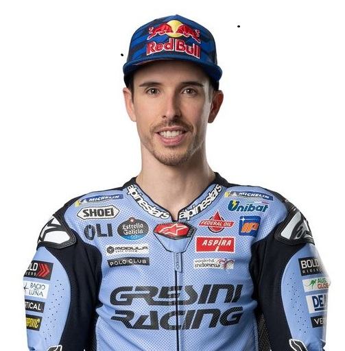

Alejandro Márquez Alentà, más conocido como Álex Márquez, es un piloto de motociclismo español que compite en la «categoría reina» de MotoGP con el equipo Gresini Racing, donde obtuvo su primera victoria en el Gran Premio de España de 2025.
Tiene un hermano tres años mayor, Marc Márquez, que ha obtenido 8 títulos del Campeonato del Mundo de Motociclismo y que compite en la categoría reina de MotoGP. Álex y Marc son los únicos hermanos que han conseguido un Campeonato del Mundo de Motociclismo, junto con haber sido los primeros hermanos en vencer en un Gran Premio en el mismo día. En la categoría reina han sido los primeros hermanos en acabar primero y segundo en toda la historia, los únicos en ganar un Gran Premio y los que más veces han coincidido en el podio.
Ahora, en 2025, Álex vive su temporada más sólida en MotoGP, estrenándose con una victoria en Argentina y repitiendo en Jerez, lo que lo ha llevado a liderar fugazmente el Mundial. A partir de ahí sumó numerosos podios y se ha mantenido como la principal oposición a su hermano Marc, aunque la racha imparable de este último ha terminado por decantar el campeonato. Pese a no poder igualar su ritmo, Álex está demostrando madurez, constancia y capacidad ganadora, consolidándose como un piloto competitivo en la élite.
| Posición en la clasificación | Puntos obtenidos | Poles | Victorias | Podios |
|---|---|---|---|---|
| 8 | 173 | 0 | 0 | 1 |